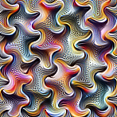
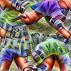
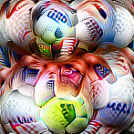
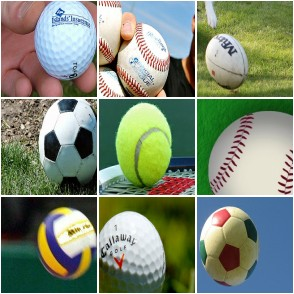
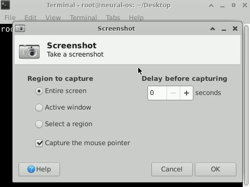
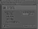
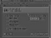
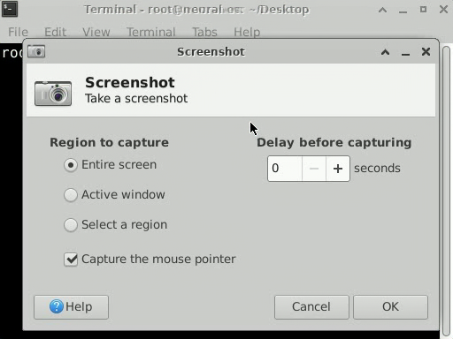
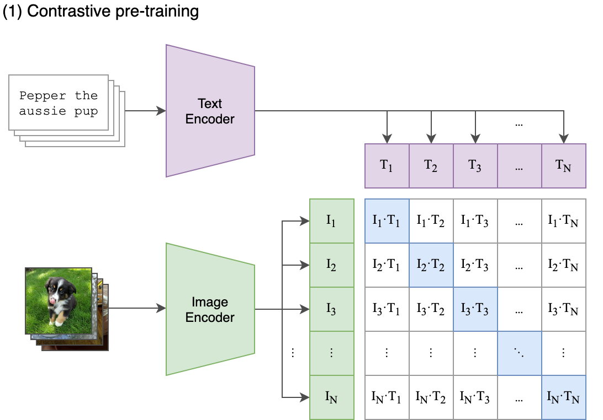

Lecture 18
From fixed features to learned vector representations
🎥 This lecture is pre-recorded - I'm away at ICML this week, so there's no in-person class today. Watch at your own pace.
📅 Due today (Thu Jul 9): CS686 project proposal. Assignment 2 is now due Thu Jul 16. Chat 9 is out and Assignment 3 is released.
💬 Questions? Post on Piazza - the TAs are available, and I'll follow up when I'm back.
One thread runs through the whole lecture: useful vectors can be learned.
Explain why hidden layers need nonlinearities.
Explain embeddings as learned vectors, including contextual ones.
Use projection, neighbors, and clusters to reason about embedding spaces.
The later examples are applications of the same idea: learned spaces become interfaces.
L17 trained models on fixed input vectors.
Today, the model also learns the vector representation.
L17 assumed the useful input vector already exists.
Where is the cat ear?
Why is dog close to puppy?
Which region is a button?
Modern ML learns the features too.
The hidden layer is not just computation: it is a learned view of the input.
inputs \(x_1, x_2, x_3\)
weighted sum: \(z = w^\top x + b\)
activation: \(a = g(z)\)
Two linear layers in a row collapse into one:
\(W_2(W_1x)= (W_2W_1)\,x\)
Depth alone adds nothing — we need a nonlinearity between the layers.
Insert \(g\) between layers: \(h = g(W_1x),\quad \hat y = W_2 h\).
\(g(x)=\max(0,x)\)
The bend is what lets stacked layers represent nonlinear functions.
Interactive demo — runs live in your browser (open the slides to try it). Question to test: can the same network fit a curve when the activation is off vs. on?
Takeaway: the activation is where hidden layers gain nonlinear expressive power.
Each hidden unit learns a detector.
The output layer combines detectors.
This is how fixed features become learned features.
A hidden layer can transform the space.
Then a simple output layer can solve the task.
Interactive demo — runs live in your browser (open the slides to try it). What to watch: the loss drops only after the hidden layer bends the decision surface.
Same training loop as L17; the difference is the learned feature map in the middle.
\(h = g(W_1x+b_1)\)
\(\hat y = \mathrm{softmax}(W_2h+b_2)\)
Every operation is differentiable, so L17's training loop applies unchanged.
Quick check: what changed from logistic regression? Only the function class, not the optimization recipe.
model = nn.Sequential(
nn.Linear(d_in, 64),
nn.ReLU(),
nn.Linear(64, n_classes),
)
loss = loss_fn(model(x), y)
loss.backward()
optimizer.step()The function is richer; the training pattern is the same.
Mechanically, this is the chain rule applied through the computation graph.
Deep models compose simple features into useful abstractions.




Feature visualizations (what each neuron responds to most). Olah et al., "Feature Visualization," Distill 2017 (CC-BY).
Local filters detect small patterns.
Shallow: edges & curves.
Deeper: object parts.
Deepest: whole objects.
Later: VLMs reuse image encoders (L23).
The same representation idea applies when the input is not pixels, but tokens.
A word ID is just a label; an embedding is a learned location in a vector space.
IDs are arbitrary labels:
cat = 17, the = 18, dog = 932
id 17 (cat) is no closer to id 18 (the) than to id 932 (dog) — adjacency means nothing.
An embedding gives each a vector, where distance = similarity:
Similar meaning → nearby vectors (cat close to dog; "the" is off on its own).
It is just a lookup table (a dictionary): a token's id selects its row.
| token | id | row = learned vector |
|---|---|---|
| cat | 17 | [0.22, -0.71, 0.10, ...] |
| dog | 932 | [0.19, -0.66, 0.12, ...] |
| car | 40 | [-0.80, 0.31, -0.40, ...] |
emb[17] → the "cat" row
emb = nn.Embedding(
num_embeddings=vocab_size,
embedding_dim=128,
)Unlike a fixed dictionary, the rows are parameters: gradient descent updates them during training.
Words that appear in the same contexts get pulled together.
I have a ___ cat — the blank is almost always a color:
To fill the same blanks well, the model must give these color words similar embeddings.
Training signal comes from prediction; geometry emerges because similar contexts create similar updates.
king − man + woman ≈ queen
Add the same "royal" direction to man and you land near woman (not exactly). Standalone embeddings — word2vec (Mikolov 2013), GloVe (Pennington 2014) — famously captured such regularities.
Today embeddings are mostly learned implicitly inside LLMs; modern contextual vectors rarely do clean arithmetic.
Bridge: static embeddings show that geometry can carry meaning; the next slide shows why one fixed point per word is not enough.
"I ate an apple" → fruit
"Apple released a phone" → company
A single fixed vector for "apple" cannot be both.
Modern models embed the whole sentence, so a word gets a different contextual vector each time.
This creates the L19 problem: context has to move information between token vectors.
Once inputs become vectors, we can ask geometric questions.
Can I see the space?
What is close to what?
What groups exist?
PCA squeezes many dimensions to 2D by keeping the directions of most spread — drag the cloud on the live slides. Question: which 2D view preserves the most large-scale variation?
PCA is linear; t-SNE and UMAP are nonlinear views that emphasize local neighborhoods.
Real WildChat conversations, 1536-dim embeddings projected to 2D — hover to read one, click to open it. Same inspection idea at scale.
Use the map to generate hypotheses about the data, then inspect points to verify them.
Interactive demo — a real embedding model runs in your browser (open the slides to try it). Nearest-neighbor question: after embedding text, which points land nearby?
This is the practical payoff of embeddings: similarity search becomes distance search.
After embeddings exist, k-means becomes a way to summarize the space with prototypes.
1. Choose \(k\); initialize \(k\) centroids (e.g. random data points).
2. Repeat until assignments stop changing:
a. Assign — put each point with its nearest centroid.
b. Update — move each centroid to the mean of its points.
Converges to a local optimum — depends on initialization, so run a few times and keep the best.
Interactive demo — runs live in your browser (open the slides to try it). What to watch: assignment and update alternate until the centers stop moving much.
The algorithm is simple; the representation determines whether the clusters mean anything.
So far, we used embeddings for individual points, neighbors, and clusters.
Next: use learned spaces to compare distributions, compress data, and align modalities.
Embed real and generated images with an Inception network, then compare the two distributions in feature space.
Bridge from clustering: instead of grouping points, compare whole distributions.
FID = distance between the two feature distributions — lower means the generations look more real.
Heusel et al. 2017.
Same idea for text: embed human and machine text in a language model's space and compare the distributions.
The learned space becomes the measurement interface.
MAUVE summarizes how much the two distributions overlap — higher means more human-like.
Pillutla et al. 2021.
Another use of learned spaces: store what matters in a smaller latent vector.
Latent diffusion will generate in a compressed latent space.




The decode looks the same as the input — the small latent kept everything that matters.
This makes the latent a useful interface: compact enough to model, rich enough to reconstruct.
Autoencoder from NeuralOS (neural-os.com).
neural-os.com
Generating in pixel space is expensive.
\(512\times384 = 196{,}608\) pixels
\(\rightarrow 64\times48 = 3{,}072\) pixels
≈ 64× fewer pixels to generate.
NeuralOS predicts the next frame in this small latent — a neural operating system.
Same story as embeddings: do hard work in the learned space, not the raw space.
A video is many frames, so pixel cost explodes — compress the time axis too.
Sora compresses space and time into spacetime latent patches, then generates there.
This is not a new principle; it scales the autoencoder idea from one frame to a video volume.
OpenAI, "Video generation models as world simulators," 2024.
Put images and their captions into one shared vector space.
A final interface: two modalities become comparable by distance.
In each batch, every image is compared with every caption; the correct pairs are the diagonal.

Across a batch, the matching image-text pairs (the diagonal) are trained to score highest.
Radford et al., "Learning Transferable Visual Models From Natural Language Supervision," ICML 2021.
score an image against prompts like "a photo of a {label}" — no task-specific training
search images with text (and vice versa) by nearest vectors in the shared space
This shared space is the bridge to vision-language models (L23).
Returning to language: L18 gives the vector objects that L19 will move around.
become embeddings
moves information between embeddings
scale this up
| From L17 | L18 adds | Needed for L19 |
|---|---|---|
| gradient training | hidden representations | deep sequence models |
| fixed feature vectors | learned embeddings | tokens as vectors |
| loss curves | PCA, neighbors, k-means | interpreting attention behavior |
The through-line: learn a useful space, then compute inside it.
A sentence is a sequence of contextual embeddings.
How should each word look at the other words?
L19: sequence models, attention, and transformers.